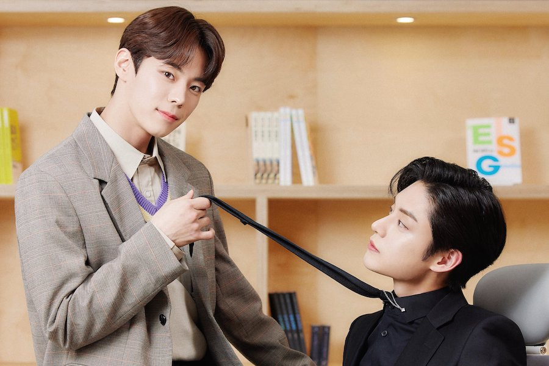
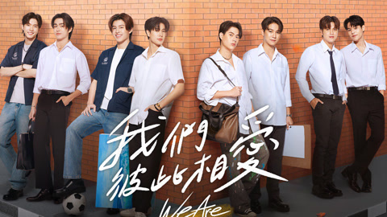
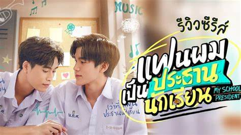
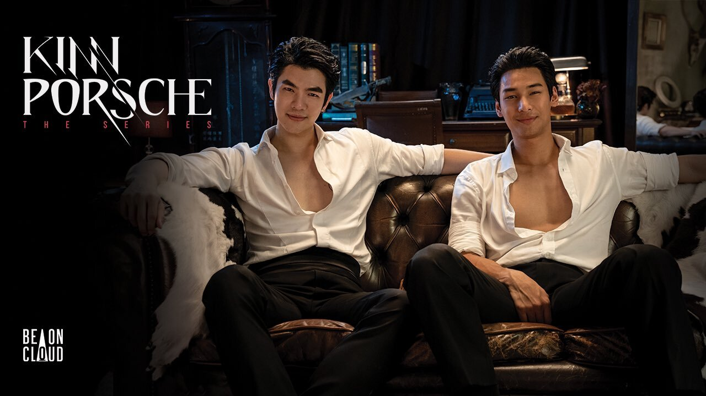
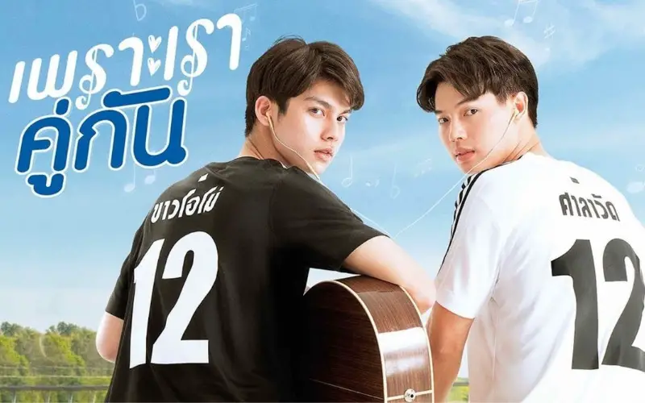
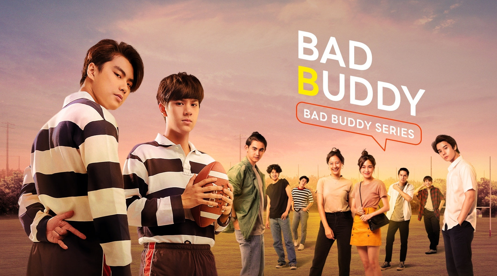
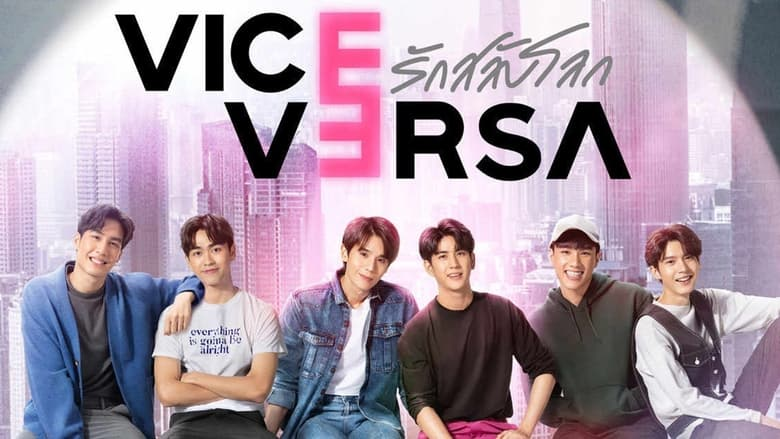

O que é um BL
BL é uma abreviação de boys love é um termo que se refere a produção ficcionais asiáticas onde aborda relacionamentos homoafetivos entre homens, é muito popular nos países asiáticos mais está cada vez mais se popularizando no mundo todo.
Alguns dos melhores BL para assistir
We Are(2024)
My School President(2022-2023)
KinnPorshe(2022)
2gether(2020)
Bad Buddy(2021)
Vice-Versa(2022)
Soulmate
(ainda não foi lançado)
Sinopses
(We Are)
é uma série bl da tailandia aonde apresentam vários personagens e casais secundários, mais o romance mais em foco é de Phum e Peem a relação entre eles começa com o pé esquerdo mais depis de começarem a conviver mais um com o outro vão sentindo novos sentimentos entre eles,trazendo um turbilhão de sentimentos átona.
(My School President)
é uma das mais famosas séries bl do mundo dos bl um clásssico, o romance entre Fourth e Gemeni um aluno do clube de mússica e o outro aluno presidente do grêmio, um romance descontraído,fofo e romântico que vale muito apena dar uma chance.
(KinnPorshe)
Esse é um dos BL mais amados e até hoje tem uma grande admiriração dos fãs, é um bl que apresenta muitas cenas hots (18+) entre o casal principal e secundário, o romance é entre um chefe da máfia tailandesa e seu guarda costas uma série cheia de ação, revira voltas inesperadas e cenas quentes um ótimo bl que entrega muito no enrredo e que vale apena ver.
(2gether)
um bl muito conhecido e supe bom de assistir, com os personagens principais sendo Sarawat e Tine aonde começão com uma relação de de namoro falsa por parte de Tine mais com o tempo essa relação fica cada vez mais próximo de se tornar uma relação verdadeira, mais teram que enfrentar obstáculos pessoais que não seram fácil para ambos, uma série que com certeza quem assistir não irá se arrepender.
(Bad Buddy)
é uma série bl aonde tem duas famílias que são rivais e por coincidência são vizinhos com os personagens Nanon e Ohm, eles acabam tendo interesse um pelo outro mais será que a relação deles irá suportar o fardo das famílias deles serem rivais e a mal aceitação, esse é mais um dos classicos do mundo bl que só ta pertendo quem ainda não assistiu.
(Vice-Versa)
uma série bl com um enredo fora do comum com vários mistérios já que os personagens principais que são interpretados pelo Jimmy e o Sea trocam de universo aonde a meta é voltar para o seu antigo universo mais nesse caminho eles aprendem algo que não vivenciaram em seu universo original, apesar de ser uma série bl diferente é muito boa e compensa bastante vivenciar e assistir esse bl.
(Soulmate)
é um bl que acabou de ser produzida as gravações, o primeiro bl produzido pela netiflix foi gravada na Coreia,Japão e Alemanha nessa história vai acompanha um jovem japonês que teve que deixar seu país aonde foi salvo por um boxeador, mostrando com um encontro por acaso pode dar início a uma história de amor, com um ator famoso no mundo dos doramas o Taecyon e Hayato ator que participou da aérie Alice in Borderland. é um bl que quando for lançado está prometendo bastante.